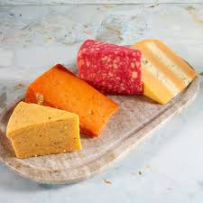

Fried Cheese

Short Description of Fried Cheese
A simple and delicious appetizer or snack. Fried cheese is a popular dish around the world, and there are many variations of the recipe.
Ingredients
- 8 Ounces Cheese
- 1 Egg
- 1/2 Cup all-purpose flour
- 1/2 cup breadcrumbs
- Vegetable oil for frying
- Salt and pepper to taste